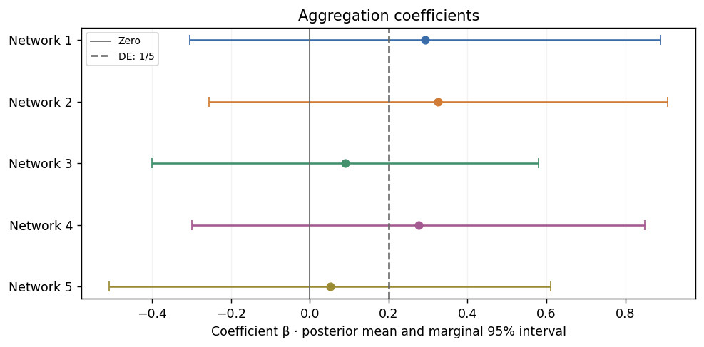
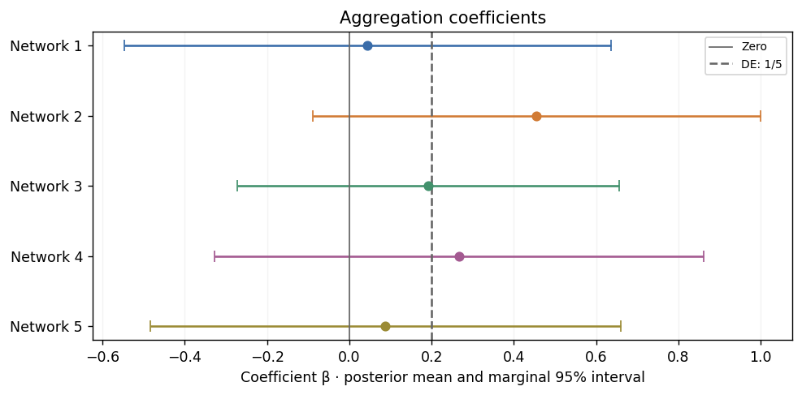
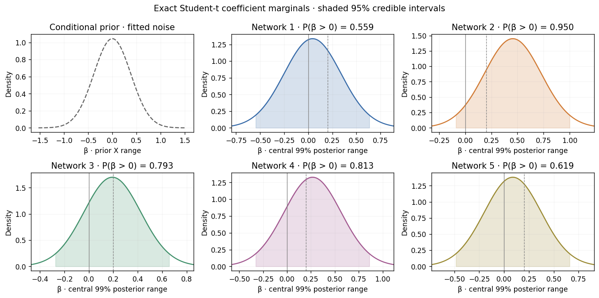
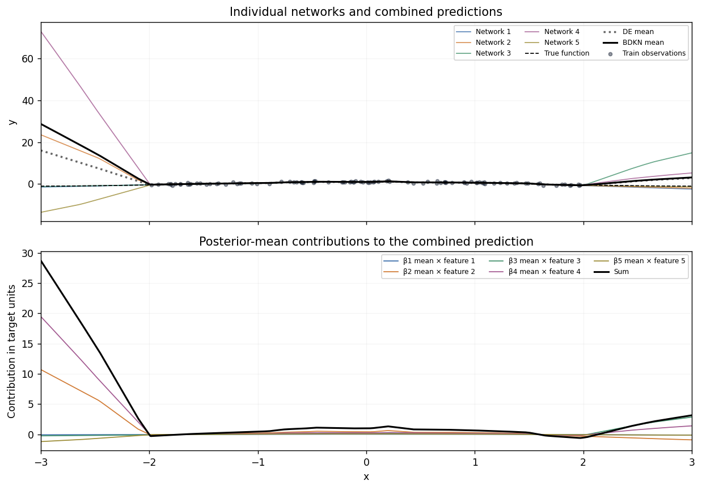
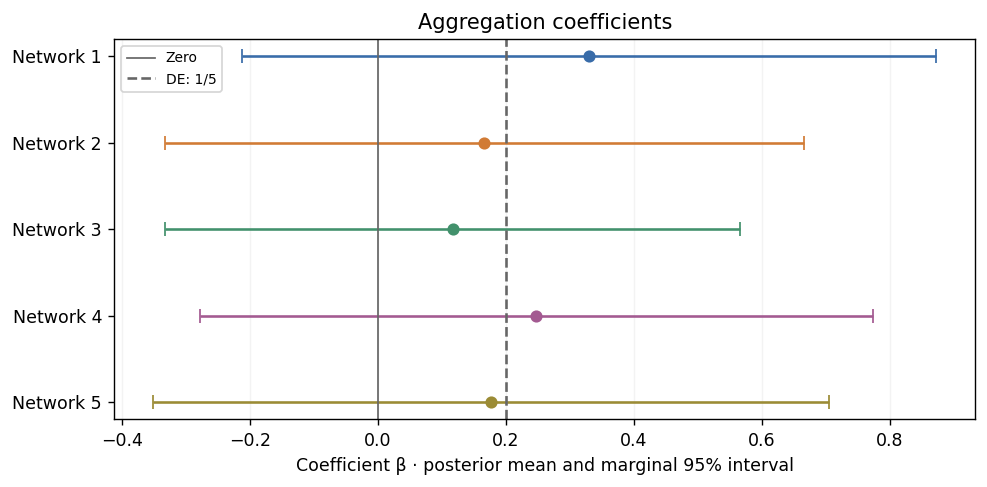
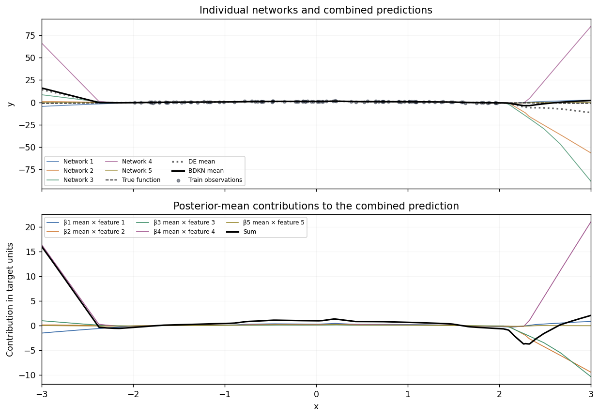
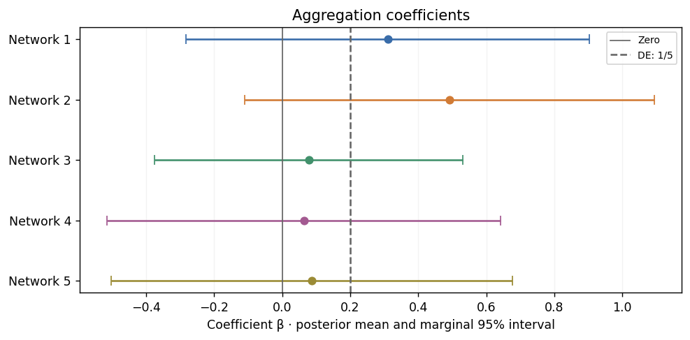
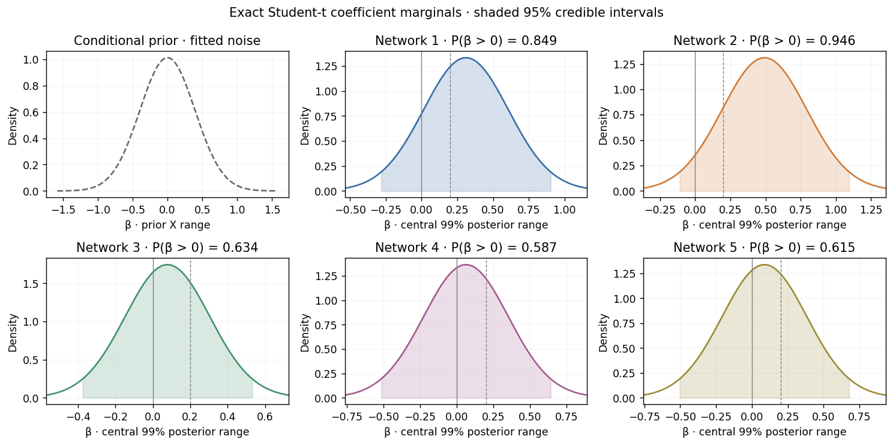
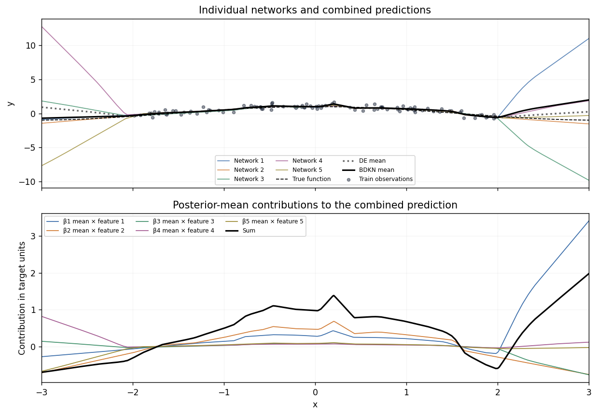

Regression comparison
Download resultsAggregation weights
Coefficients can be negative and need not sum to one. Intervals describe coefficient uncertainty; the dashed reference is DE’s fixed 1/H weight.
BDKN



Each density panel uses its own X range for readability; coefficient intervals above share a common axis. Prior reference conditions on fitted noise. Contribution shares use held-out inputs; test targets are used only for scoring.
| Network | β mean | 95% low | 95% high | P(β > 0) | Contribution share | Test RMSE | Test NLL |
|---|---|---|---|---|---|---|---|
| 1 | 0.29299 | -0.30370 | 0.88968 | 0.83384 | 0.29080 | 0.40601 | 2.19498 |
| 2 | 0.32588 | -0.25627 | 0.90802 | 0.86530 | 0.30631 | 0.35829 | 0.97832 |
| 3 | 0.09065 | -0.39933 | 0.58062 | 0.64282 | 0.08804 | 0.33808 | 1.01757 |
| 4 | 0.27580 | -0.29841 | 0.85002 | 0.82854 | 0.26186 | 0.32456 | 1.46765 |
| 5 | 0.05188 | -0.50796 | 0.61171 | 0.57274 | 0.05300 | 0.38945 | 2.51700 |
Functional repulsion · BDKN



Each density panel uses its own X range for readability; coefficient intervals above share a common axis. Prior reference conditions on fitted noise. Contribution shares use held-out inputs; test targets are used only for scoring.
| Network | β mean | 95% low | 95% high | P(β > 0) | Contribution share | Test RMSE | Test NLL |
|---|---|---|---|---|---|---|---|
| 1 | 0.04456 | -0.54601 | 0.63513 | 0.55935 | 0.01054 | 0.47108 | 3.65224 |
| 2 | 0.45520 | -0.08955 | 0.99994 | 0.94976 | 0.33529 | 5.84069 | 2973630.52954 |
| 3 | 0.19205 | -0.27257 | 0.65667 | 0.79294 | 0.10331 | 4.01790 | 599414.13812 |
| 4 | 0.26704 | -0.32707 | 0.86116 | 0.81267 | 0.50689 | 16.87896 | 44752.34779 |
| 5 | 0.08756 | -0.48410 | 0.65922 | 0.61908 | 0.04398 | 3.00401 | 346.94559 |
Weight repulsion · BDKN



Each density panel uses its own X range for readability; coefficient intervals above share a common axis. Prior reference conditions on fitted noise. Contribution shares use held-out inputs; test targets are used only for scoring.
| Network | β mean | 95% low | 95% high | P(β > 0) | Contribution share | Test RMSE | Test NLL |
|---|---|---|---|---|---|---|---|
| 1 | 0.33048 | -0.21208 | 0.87303 | 0.88514 | 0.07594 | 1.16285 | 84486.51707 |
| 2 | 0.16639 | -0.33275 | 0.66553 | 0.74505 | 0.19640 | 12.45175 | 22709.46062 |
| 3 | 0.11702 | -0.33251 | 0.56655 | 0.69666 | 0.19323 | 17.66869 | 822086.76487 |
| 4 | 0.24722 | -0.27897 | 0.77342 | 0.82324 | 0.51383 | 20.81108 | 8.60456 |
| 5 | 0.17711 | -0.35139 | 0.70561 | 0.74617 | 0.02060 | 0.48546 | 16806.65046 |
First-order repulsion · BDKN



Each density panel uses its own X range for readability; coefficient intervals above share a common axis. Prior reference conditions on fitted noise. Contribution shares use held-out inputs; test targets are used only for scoring.
| Network | β mean | 95% low | 95% high | P(β > 0) | Contribution share | Test RMSE | Test NLL |
|---|---|---|---|---|---|---|---|
| 1 | 0.31034 | -0.28220 | 0.90289 | 0.84937 | 0.41435 | 3.08521 | 236562.13152 |
| 2 | 0.49215 | -0.11033 | 1.09464 | 0.94588 | 0.31459 | 0.35156 | 128.60769 |
| 3 | 0.07816 | -0.37431 | 0.53063 | 0.63373 | 0.10449 | 2.39314 | 1529.69568 |
| 4 | 0.06424 | -0.51401 | 0.64249 | 0.58700 | 0.08210 | 3.19006 | 1342176.70738 |
| 5 | 0.08748 | -0.50275 | 0.67771 | 0.61533 | 0.08446 | 1.51468 | 93.69924 |